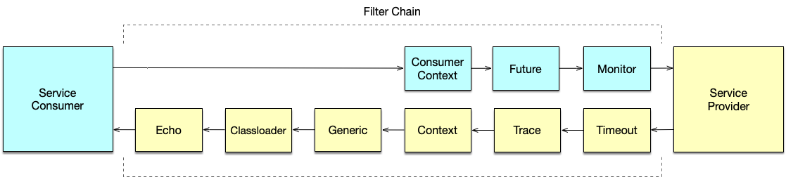

本地调用
本地调用介绍
当一个应用既是一个服务的提供者，同时也是这个服务的消费者的时候，可以直接对本机提供的服务发起本地调用。从 2.2.0 版本开始，Dubbo 默认在本地以 injvm 的方式暴露服务，这样的话，在同一个进程里对这个服务的调用会优先走本地调用。
与本地对象上方法调用不同的是，Dubbo 本地调用会经过 Filter 链，其中包括了 Consumer 端的 Filter 链以及 Provider 端的 Filter 链。通过这样的机制，本地消费者和其他消费者都是统一对待，统一监控，服务统一进行治理。

同时，相比于远程调用来说，Dubbo 本地调用性能较优，省去了请求、响应的编解码及网络传输的过程。
要使用 Dubbo 本地调用不需做特殊配置，按正常 Dubbo 服务暴露服务即可。任一服务在暴露远程服务的同时，也会同时以 injvm 的协议暴露本地服务。injvm 是一个伪协议，不会像其他协议那样对外开启端口，只用于本地调用的目的。
以下面的 XML 配置为例：
<dubbo:registry address="zookeeper://127.0.0.1:2181"/>
<dubbo:protocol name="dubbo" port="20800"/>
<bean id="demoServiceTarget" class="org.apache.dubbo.samples.local.impl.DemoServiceImpl"/>
<dubbo:service interface="org.apache.dubbo.samples.local.api.DemoService" ref="demoServiceTarget"/>
<dubbo:reference id="demoService" interface="org.apache.dubbo.samples.local.api.DemoService"/>
这里同时配置了同一服务 DemoService 的提供者以及消费者。在这种情况下，该应用中的 DemoService 的消费方会优先使用 injvm 协议进行本地调用。上述的例子可以在 dubbo-samples 工程中找到源码：https://github.com/apache/dubbo-samples/blob/master/dubbo-samples-local
细粒度控制本地调用
本地调用是可以显示关闭的，通过这种方式，服务提供者可以做到对远端服务消费者和本地消费者一视同仁。具体做法是通过 scope="remote" 来关闭 injvm 协议的暴露，这样，即使是本地调用者，也需要从注册中心上获取服务地址列表，然后才能发起调用，而这个时候的调用过程，与远端的服务消费者的过程是一致的。
<bean id="target" class="org.apache.dubbo.samples.local.impl.DemoServiceImpl"/>
<!-- 服务提供者指定 scope="remote" -->
<dubbo:service interface="org.apache.dubbo.samples.local.api.DemoService" ref="target" scope="remote"/>
<dubbo:reference id="demoService" interface="org.apache.dubbo.samples.local.api.DemoService"/>
同样的，服务消费者也支持通过 scope 来限定发起调用优先走本地，还是只走远程。比如，可以通过以下的方式强制消费端通过远程调用的方式来发起 dubbo 调用：
<!-- 服务消费者指定 scope="remote" -->
<dubbo:reference id="demoService" interface="org.apache.dubbo.samples.local.api.DemoService" scope="remote"/>
如果同时服务提供方限定了 scope="local" 的话，
<!-- 服务提供者指定 scope="remote" -->
<dubbo:service interface="org.apache.dubbo.samples.local.api.DemoService" ref="target" scope="remote"/>
<!-- 服务消费者指定 scope="local" -->
<dubbo:reference id="demoService" interface="org.apache.dubbo.samples.local.api.DemoService" scope="local"/>
那么该程序中的 dubbo 调用将会失败，原因是服务提供方只暴露了远程服务到注册中心上，并没有暴露 injvm 协议的服务，而出于同一个进程中的服务消费者查找不到 injvm 协议的服务，也不会去远程的注册中心上订阅服务地址。同样的，当服务提供者限定 scope="local" 而服务消费者限定 scope="remote" 也会因为相同的原因导致调用失败。出错信息如下：
[20/03/19 05:03:18:018 CST] main INFO config.AbstractConfig: [DUBBO] Using injvm service org.apache.dubbo.samples.local.api.DemoService, dubbo version: 2.7.1, current host: 169.254.146.168
Exception in thread "main" org.springframework.beans.factory.BeanCreationException: Error creating bean with name 'demoService': FactoryBean threw exception on object creation; nested exception is java.lang.IllegalStateException: Failed to check the status of the service org.apache.dubbo.samples.local.api.DemoService. No provider available for the service org.apache.dubbo.samples.local.api.DemoService from the url injvm://127.0.0.1/org.apache.dubbo.samples.local.api.DemoService?application=demo-provider&default.lazy=false&default.sticky=false&dubbo=2.0.2&interface=org.apache.dubbo.samples.local.api.DemoService&lazy=false&methods=sayHello&pid=76198®ister.ip=169.254.146.168&release=2.7.1-SNAPSHOT&scope=local&side=consumer&sticky=false×tamp=1553072598838 to the consumer 169.254.146.168 use dubbo version 2.7.1
何时无法使用本地调用
默认情况下，本地调用是自动开启的，不需要做额外的配置。只有当需要关闭的时候，才需要通过 scope 的配置来显式的关闭。
但是，特别需要指出的是，在下面的几种情况下，本地调用是无法使用的：
第一，泛化调用的时候无法使用本地调用。
第二，消费者明确指定 URL 发起直连调用。当然，如果消费者指定的是 injvm 的 URL，最终的调用也是走本地调用的，比如：
<dubbo:reference id="demoService" interface="org.apache.dubbo.samples.local.api.DemoService" url="injvm://127.0.0.1/org.apache.dubbo.samples.local.api.DemoService"/>
强制打开本地调用
除了通过 scope 来控制本地调用的行为之外，也可以通过 injvm 这个配置来强制打开或者禁用本地调用。
<dubbo:consumer injvm="false" .../>
<dubbo:provider injvm="true" .../>
但是通过 injvm 来配置本地调用的方式已经被废弃。通过 scope 的方式来控制是官方推荐的。
总结
本文介绍了本地调用的概念以及带来的好处，并进一步的揭示了 dubbo 本地调用实际上是在当前进程中暴露了 injvm 的协议，而该协议并不会对外暴露端口，然后讨论了如何通过 scope 来细粒度的控制本地调用的行为，并强调了通过 invjm 来配置的方式已经被废弃，在未来版本中可能会被删除。